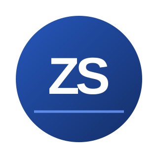

Open to opportunities · Graduating Dec 2026
Hi, I'm Zaid Shwayyat.
I turn complex operations into clear solutions.
Management Information Systems student at the University of Oklahoma, focused on supply chain operations, business analytics, and project management.
I've worked across distribution operations, supplier coordination, and data-driven reporting. I enjoy connecting people, processes, and technology to make businesses run more effectively. I'm pursuing opportunities where I can improve workflows, support decisions, and deliver measurable results.

AREAS OF FOCUS
Supply ChainAnalyticsProject Management
AT A GLANCE
Experience that connects data with execution.
2
Supply chain internships
Williams-Sonoma and United Engines
$29.27M
Returns data analyzed
Year-to-date dataset in a supply chain improvement project
75+
Vehicles coordinated
Sourcing, pricing, inventory and delivery operations
NEXT STEP
Want to see my work?
Explore applied projects in operations analytics, reporting, and workflow improvement.